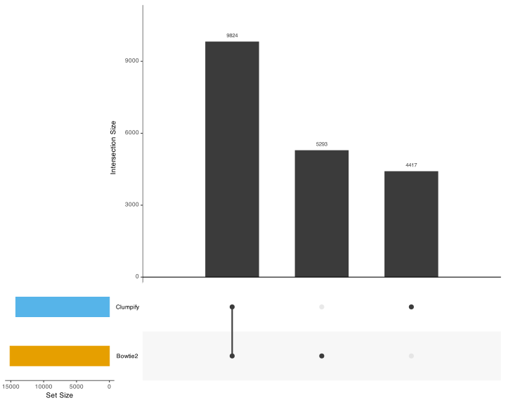

An application of the v2.4.0 pipeline on Crits-Christoph 2021
Authors
Harmon Bhasin
Will Bradshaw
Published
October 16, 2024
We’d like to thank Mike for his contributions in helping us understand how to conduct the duplication and fragment length analyses. This analysis was based of an example analysis that he shared with us.
1 Motivation
We’re interested in understanding the mgs pipeline better, and to this extent, we’d like to compare the fragment lengths as well as the duplicate counts between BBtools (which does fancy clustering to remove duplicates; principled approach) and our own analysis with Bowtie2 (which uses alignments to label reads as duplicates; naive approach). As of right now, BBtools removes duplicates, however Bowtie2 does not, leading to some weirdness that we’d like to eliminate in the future.
Figure 1: Distribution of duplicate counts per sample
The distribution of duplicate counts tends to look pretty similar between both analyses (clumpify looks like it spikes a lot, but this is an artifact of the plot) (Fig. 1). However, Bowtie2 has a longer tail, with duplicate counts around 30, whereas clumpify only gets around 15.
Figure 2: Comparison of Clumpify fragement length to Bowtie2 insert size ( unmerged reads set to length 320 in clumpify plot)
A large fraction of reads were unable to be merged by BBmerge (Fig. 2). The fragment length on clumpify otherwise looks normal. Bowtie2’s insert size peaks around 175 bases then slowly tapers off, following our understanding of insert sizes from alignmnents. Given the large tail of Bowtie2 insert sizes, we’ll truncate the x-axis for the following plots to better highlight the differences between both methods.
2.3 Merge analysis
Code
hv_hits |>count(sample, bbmerge_merge_status) |>mutate(.by = sample, frac = n /sum(n)) |>ggplot(aes(x = sample, y = frac, fill =factor(bbmerge_merge_status))) +geom_bar(stat ="identity") +scale_fill_manual(values = colors_oi, labels =c("Unmerged", "Merged"), "Merge status") +theme_light() +coord_flip()
Figure 3: Fraction of reads that were merged by BBmerge
On average, 16.5% of reads were merged by BBmerge, with sample ranging from ~10% to ~37.5% (Fig. 3).
Table 1: Comparison of duplicate Bowtie2 reads with and without
removing duplicates.
The first thing we need to do is remove duplicates from the bowtie2 analysis, since they are identified, but not removed. This reduces our duplicate count by approximately 25% (Table 1).
Code
clumpify_dups <- hv_hits |>filter(clumpify_dupcount >1)dup_comparison <-rbind(bowtie2_dups, clumpify_dups) %>%distinct()# Linear modeldup_model <-lm(bowtie2_dupcount ~ clumpify_dupcount, data = dup_comparison)# Calculate correlation coefficientcor_coef <-cor(dup_comparison$clumpify_dupcount, dup_comparison$bowtie2_dupcount, method ="pearson")# Create a scatter plot with regression line and correlation statisticsdup_plot <-ggplot(dup_comparison, aes(x = clumpify_dupcount, y = bowtie2_dupcount)) +geom_point(alpha =0.1) +geom_smooth(method ="lm", color ="red") +scale_x_log10() +scale_y_log10() +labs(x ="Clumpify duplicate count",y ="Bowtie2 duplicate count",title ="Comparison of Clumpify and Bowtie2 duplicate counts" ) +theme_light() +annotate("text", x =max(dup_comparison$clumpify_dupcount), y =min(dup_comparison$bowtie2_dupcount),label =sprintf("R² = %.3f\nCorrelation = %.3f", summary(dup_model)$r.squared, cor_coef),hjust =1, vjust =0, size =4)dup_plot
Figure 6: Comparison of duplicate counts in duplicate reads between Clumpify and Bowtie2
Looking at the duplicate counts for duplicate reads in each method, we can see a positive correlation (Pearson = 0.421) between the two methods (Fig. 6).
Code
# Create sets for UpSet plotclumpify_set <- bowtie2_dups$seq_idbowtie2_set <- clumpify_dups$seq_id# Create a list of setssets <-list(Clumpify = clumpify_set,Bowtie2 = bowtie2_set)# Create the UpSet plotupset_plot <-upset(fromList(sets),order.by ="freq",nsets =2,point.size =3,line.size =1,mainbar.y.label ="Intersection Size",sets.x.label ="Set Size",text.scale =1.2,sets.bar.color = colors_oi[c(2, 3)])# Display the plotupset_plot

Figure 7: Comparison of duplicate reads between Clumpify and Bowtie2
To get a better understanding about the differences between the sequences that both methods have identified as duplicates, we can look at an Upset plot (Fig. 7). A large portion of sequences are identified as duplicates by both methods (9774), with a smaller, but sizeable, portion of sequences being identified by individual methods (4467 for clumpify; 5343 for bowtie2).
Code
# Calculate the overall y-axis rangey_min <-min(c(bowtie2_dens$frac, clumpify_dens$frac), na.rm =TRUE)y_max <-max(c(bowtie2_dens$frac, clumpify_dens$frac), na.rm =TRUE)plot_clumpify_dens <- clumpify_dens |>ggplot(aes(x = clumpify_dupcount, y = frac, color = sample)) +scale_y_log10(limits =c(y_min, y_max)) +scale_x_continuous() +scale_color_manual(values = colors_sample_source) +labs(y ="Fraction of inserts", x ="Clumpify copies") +theme_light() +geom_line()plot_bowtie2_dens <- bowtie2_dens |>ggplot(aes(x = bowtie2_dupcount, y = frac, color = sample)) +scale_y_log10(limits =c(y_min, y_max)) +scale_x_continuous() +scale_color_manual(values = colors_sample_source) +labs(y ="Fraction of inserts", x ="Bowtie2 copies") +theme_light() +geom_line() + right_themeggarrange(plot_clumpify_dens, plot_bowtie2_dens, ncol =2, align ="v", legend ="none")
Figure 8: Fraction of duplicate reads identified by Clumpify and Bowtie2
Lastly, we can see that the fraction of duplicates identified by each method is pretty similar, with Bowtie2 having a longer tail (Fig. 8).
Source Code
---title: "Comparing fragment length and duplication analysis between BBtools and Bowtie2"subtitle: "An application of the v2.4.0 pipeline on Crits-Christoph 2021"author: - "Harmon Bhasin" - "Will Bradshaw"date: 2024-10-16format: html: toc: true toc-title: "Table of contents" number-sections: true code-fold: true code-tools: true df-print: paged fig-format: svg fig-width: 10 fig-height: 5 fig-asp: 0.8editor: visual: true render-on-save: falsecomments: hypothesis: true ---```{r setup, include=FALSE}library(pacman)p_load(tidyverse, here, fs, knitr, broom, cowplot, patchwork, ggbeeswarm, ggridges, utils, RColorBrewer, ggpubr, gridGraphics, UpSetR)colors_oi <- grDevices::palette.colors() colors_oi['yellow'] <- "#F5C710"colors_oi <- colors_oi |> unname()colors_sample_source <- c(brewer.pal(n=12, name = "Paired"), brewer.pal(n = 6, name = "Pastel1")) |> unname()sample_sheet <- read_csv("/Users/harmonbhasin/work/securebio/pipeline-development/random-mgs-analysis/frag_dup_analysis/samplesheet.csv") |> select(sample)hv_hits <- read_tsv("/Users/harmonbhasin/work/securebio/pipeline-development/random-mgs-analysis/frag_dup_analysis/hv_hits_putative_collapsed.tsv.gz") %>% mutate(sample = factor(sample, levels = sample_sheet$sample))right_theme <- theme_light() + theme( axis.text.y = element_blank(), axis.ticks.y = element_blank(), axis.title.y = element_blank() ) ```*We'd like to thank Mike for his contributions in helping us understand how to conduct the duplication and fragment length analyses. This analysis was based of an example analysis that he shared with us.*# MotivationWe're interested in understanding the mgs pipeline better, and to this extent, we'd like to compare the fragment lengths as well as the duplicate counts between BBtools (which does fancy clustering to remove duplicates; principled approach) and our own analysis with Bowtie2 (which uses alignments to label reads as duplicates; naive approach). As of right now, BBtools removes duplicates, however Bowtie2 does not, leading to some weirdness that we'd like to [eliminate in the future](https://github.com/naobservatory/mgs-workflow/issues/72).We'll be using [Crits-Christoph 2021](https://data.securebio.org/wills-public-notebook/notebooks/2024-02-04_crits-christoph-1.html) for this analysis out of convenience.# Exploratory analysis## Duplicate counts```{r plot-all-mapped-reads}#| fig-width: 10 #| fig-height: 5 #| fig-cap: "Figure 1: Distribution of duplicate counts per sample"#| warning: falseclumpify_dupcount_plot <- hv_hits |> ggplot(aes(color = sample, x = clumpify_dupcount)) + scale_y_log10("Count") + geom_freqpoly() + scale_color_manual(values = colors_sample_source) + labs(x = "Clumpify duplicate count") + theme_light()bowtie2_dupcount_plot <- hv_hits |> ggplot(aes(color = sample, x = bowtie2_dupcount)) + scale_y_log10() + geom_freqpoly() + scale_color_manual(values = colors_sample_source) + labs(x = "Bowtie2 duplicate count") + right_themeggarrange(clumpify_dupcount_plot, bowtie2_dupcount_plot, ncol = 2, align = "v", legend = "none")```The distribution of duplicate counts tends to look pretty similar between both analyses (clumpify looks like it spikes a lot, but this is an artifact of the plot) (Fig. 1). However, Bowtie2 has a longer tail, with duplicate counts around 30, whereas clumpify only gets around 15.## Fragment length / insert size```{r}#| warning: false#| include: false#| fig-cap: "Comparison of Clumpify fragement length to Bowtie2 insert size"# Linear modelfrag_model <-lm(bowtie2_frag_length ~ bbmerge_frag_length, data = hv_hits, use ="complete.obs")# Calculate correlation coefficientcor_coef <-cor(hv_hits$bbmerge_frag_length, hv_hits$bowtie2_frag_length, method ="pearson", use ="complete.obs")hv_hits |>ggplot(aes(y=bowtie2_frag_length, x=bbmerge_frag_length)) +geom_smooth(method ="lm", color ="red") +labs(x ="Clumpify fragment length", y ="Bowtie2 insert size") +geom_point(alpha =0.5) +theme_light() +annotate("text", x =125, y =50,label =sprintf("R² = %.3f\nCorrelation = %.3f", summary(frag_model)$r.squared, cor_coef),hjust =1, vjust =0, size =4)``````{r}#| warning: false#| fig-cap: "Figure 2: Comparison of Clumpify fragement length to Bowtie2 insert size ( unmerged reads set to length 320 in clumpify plot)" clumpify_width <- hv_hits |>mutate(width =ifelse(bbmerge_merge_status, bbmerge_frag_length, 320)) |>ggplot(aes(color = sample, x=width)) +scale_y_log10(limits =c(1, 1e5), "Count") +geom_freqpoly() +labs(x ="Clumpify fragment length") +theme_light()bowtie2_width <- hv_hits |>ggplot(aes(color = sample, x=bowtie2_frag_length)) +scale_y_log10(limits =c(1, 1e5), ) +geom_freqpoly() +labs(x ="Bowtie2 insert size") + right_themeggarrange(clumpify_width, bowtie2_width, ncol =2, align ="v", legend ="none")```A large fraction of reads were unable to be merged by BBmerge (Fig. 2). The fragment length on clumpify otherwise looks normal. Bowtie2's insert size peaks around 175 bases then slowly tapers off, following our understanding of insert sizes from alignmnents. Given the large tail of Bowtie2 insert sizes, we'll truncate the x-axis for the following plots to better highlight the differences between both methods.## Merge analysis```{r}#| warning: false#| fig-cap: "Figure 3: Fraction of reads that were merged by BBmerge"hv_hits |>count(sample, bbmerge_merge_status) |>mutate(.by = sample, frac = n /sum(n)) |>ggplot(aes(x = sample, y = frac, fill =factor(bbmerge_merge_status))) +geom_bar(stat ="identity") +scale_fill_manual(values = colors_oi, labels =c("Unmerged", "Merged"), "Merge status") +theme_light() +coord_flip()```On average, 16.5% of reads were merged by BBmerge, with sample ranging from ~10% to ~37.5% (Fig. 3).```{r}#| warning: false#| fig-cap: "Figure 4: Density of Bowtie2 insert sizes over all, merged, and unmerged reads (x-axis truncated at 200)"merged_bowtie2_insert <- hv_hits |>mutate(bbmerge_merge_status =as.character(bbmerge_merge_status)) |>bind_rows( hv_hits |>mutate(bbmerge_merge_status ="All reads"),)merged_bowtie2_insert |>ggplot(aes(x = bowtie2_frag_length, y ="", fill = bbmerge_merge_status)) +labs(x ="Bowtie2 insert size", y ="Sample") +scale_fill_manual(values = colors_oi,labels =c("0"="Unmerged", "1"="Merged")) +expand_limits(x =0) +geom_vline(xintercept =300, color ="grey") +geom_density_ridges(stat ="binline", scale =10, alpha =0.5) +theme_light() +xlim(0,200)```BBmerge predominatly merges shorter length reads, acting as expected (Fig. 4).```{r}#| warning: false#| fig-cap: "Figure 5: Density of widths in merged reads between Clumpify and Bowtie2 (x-axis truncated at 150)"frac_merged <- hv_hits |>summarize(frac_merged =mean(bbmerge_merge_status) |>round(2) )combined_plot <- hv_hits |>filter(bbmerge_merge_status ==1) |>select(sample, bbmerge_frag_length, bowtie2_frag_length) |>pivot_longer(cols =c(bbmerge_frag_length, bowtie2_frag_length),names_to ="source",values_to ="frag_length" ) |>mutate(source =factor(source, levels =c("bbmerge_frag_length", "bowtie2_frag_length"),labels =c("Clumpify fragment length", "Bowtie2 insert size")) )ggplot(combined_plot, aes(x = frag_length, y ="", fill = source)) +geom_density_ridges(stat ="binline", scale =10, alpha =0.5) +scale_fill_manual(values =c("Clumpify fragment length"= colors_oi[2], "Bowtie2 insert size"= colors_oi[3])) +labs(x ="Fragment length", y =NULL, fill ="Source") +xlim(0, 150) +theme_light()```The width between both methods are very similar to each other (Fig. 5).# Duplicate analysisTo gain a better understanding of the differences between both methods in marking reads as duplicates, we'll now only look at duplicate reads.```{r}#| warning: false#| tbl-cap: "Table 1: Comparison of duplicate Bowtie2 reads with and without removing duplicates."bowtie2_dups <- hv_hits |>filter(bowtie2_dupcount >1) |>group_by(bowtie2_exemplar) |>slice_sample(n=1) |>ungroup() rbind(normal_count <- hv_hits |>filter(bowtie2_dupcount >1) |>count() |>mutate(name ="Normal"),bowtie2_dups |>count() |>mutate(name ="Duplicate reads removed"))```The first thing we need to do is remove duplicates from the bowtie2 analysis, since they are identified, but not removed. This reduces our duplicate count by approximately 25% (Table 1).```{r}#| warning: false#| fig-cap: "Figure 6: Comparison of duplicate counts in duplicate reads between Clumpify and Bowtie2"clumpify_dups <- hv_hits |>filter(clumpify_dupcount >1)dup_comparison <-rbind(bowtie2_dups, clumpify_dups) %>%distinct()# Linear modeldup_model <-lm(bowtie2_dupcount ~ clumpify_dupcount, data = dup_comparison)# Calculate correlation coefficientcor_coef <-cor(dup_comparison$clumpify_dupcount, dup_comparison$bowtie2_dupcount, method ="pearson")# Create a scatter plot with regression line and correlation statisticsdup_plot <-ggplot(dup_comparison, aes(x = clumpify_dupcount, y = bowtie2_dupcount)) +geom_point(alpha =0.1) +geom_smooth(method ="lm", color ="red") +scale_x_log10() +scale_y_log10() +labs(x ="Clumpify duplicate count",y ="Bowtie2 duplicate count",title ="Comparison of Clumpify and Bowtie2 duplicate counts" ) +theme_light() +annotate("text", x =max(dup_comparison$clumpify_dupcount), y =min(dup_comparison$bowtie2_dupcount),label =sprintf("R² = %.3f\nCorrelation = %.3f", summary(dup_model)$r.squared, cor_coef),hjust =1, vjust =0, size =4)dup_plot``` Looking at the duplicate counts for duplicate reads in each method, we can see a positive correlation (Pearson = 0.421) between the two methods (Fig. 6). ```{r}#| warning: false#| fig-cap: "Figure 7: Comparison of duplicate reads between Clumpify and Bowtie2"# Create sets for UpSet plotclumpify_set <- bowtie2_dups$seq_idbowtie2_set <- clumpify_dups$seq_id# Create a list of setssets <-list(Clumpify = clumpify_set,Bowtie2 = bowtie2_set)# Create the UpSet plotupset_plot <-upset(fromList(sets),order.by ="freq",nsets =2,point.size =3,line.size =1,mainbar.y.label ="Intersection Size",sets.x.label ="Set Size",text.scale =1.2,sets.bar.color = colors_oi[c(2, 3)])# Display the plotupset_plot```To get a better understanding about the differences between the sequences that both methods have identified as duplicates, we can look at an [Upset plot](https://upset.app/) (Fig. 7). A large portion of sequences are identified as duplicates by both methods (9774), with a smaller, but sizeable, portion of sequences being identified by individual methods (4467 for clumpify; 5343 for bowtie2).```{r}#| warning: false#| include: falsebowtie2_dens <- bowtie2_dups |>count(sample, bowtie2_dupcount) |>mutate(.by = sample, frac = n /sum(n))clumpify_dens <- clumpify_dups |>count(sample, clumpify_dupcount) |>mutate(.by = sample, frac = n /sum(n))``````{r}#| warning: false#| fig-cap: "Figure 8: Fraction of duplicate reads identified by Clumpify and Bowtie2"# Calculate the overall y-axis rangey_min <-min(c(bowtie2_dens$frac, clumpify_dens$frac), na.rm =TRUE)y_max <-max(c(bowtie2_dens$frac, clumpify_dens$frac), na.rm =TRUE)plot_clumpify_dens <- clumpify_dens |>ggplot(aes(x = clumpify_dupcount, y = frac, color = sample)) +scale_y_log10(limits =c(y_min, y_max)) +scale_x_continuous() +scale_color_manual(values = colors_sample_source) +labs(y ="Fraction of inserts", x ="Clumpify copies") +theme_light() +geom_line()plot_bowtie2_dens <- bowtie2_dens |>ggplot(aes(x = bowtie2_dupcount, y = frac, color = sample)) +scale_y_log10(limits =c(y_min, y_max)) +scale_x_continuous() +scale_color_manual(values = colors_sample_source) +labs(y ="Fraction of inserts", x ="Bowtie2 copies") +theme_light() +geom_line() + right_themeggarrange(plot_clumpify_dens, plot_bowtie2_dens, ncol =2, align ="v", legend ="none")```Lastly, we can see that the fraction of duplicates identified by each method is pretty similar, with Bowtie2 having a longer tail (Fig. 8).